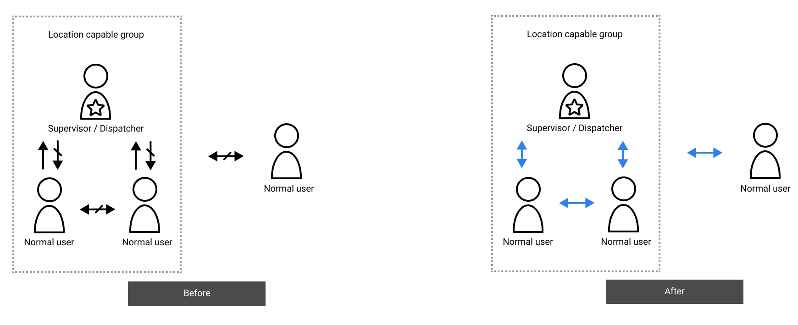
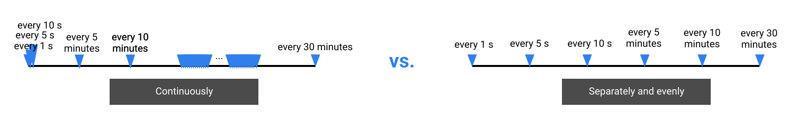

{kind=link}
{kind=link}
{kind=link}
{kind=link}
{kind=link}
{kind=link}
{kind=link}
{kind=link}
{kind=link}
Design is as below:
{kind=link}
{kind=link}

Process
Below is a high-level abstraction of the process. We revisit the previous phase(s) when needed.
User story & pain points
Based on the requirement, I identified 2 different types of users, developed the scenarios, concluded user needs from the scenario, and finally discussed with our clients for alignment. The analysis and our proposed features were well aknowledged by the client that they modified their requirement to include those features.
Authenticated should be able to search locations through address or (X, Y) in the map.
* Client SME confirmed the need and would like to add it to the feature. Design was ready, but feature dropped due to SDK readyness.
Authenticated users need to view normal users' location. Their location needs to be constantly updated in the map view.
* It requires the authenticated users and normal users to be in the same location capable group.
Authenticated users want a way to quickly select a group of users, in preparation for starting ad-hoc group call.
Authenticated users need to start ad-hoc group call from the map view.
Comparing to normal users' location constantly updated and pushed to authenticated users, all users need a quick and easy way to share their location to any other users.
Location reporting consumes battery. The authenticated users might want the location to be up-to-date, but it might not always be a good thing for the location reporter.
Access map view and start 1:1 call
Authenticated Users can select another user from the map view, and start 1:1 call there.
The location sender and the viewer
The initial ask was to have the normal user always be location sender, the authenticated user is always the location viewer, and locations will be transmitted up to authenticated user's choice.
When defining user painpoints, we discovered this is not enough and proposed to add a one-time location share feature, to share the location as (X,Y) coordinates, which can be rendered and opened in a map on the receiver side. It's a simple change, and will make below changes:
Start ad-hoc group call from map view
When design this feature, my goal is to focus on the user needs, and cover different use cases. I studied and covered use cases when users initiate call by (1) manually one-by-one selection from the map, (2) add contact that's not in the map view, (3) fast bulk selection, (4) single tap to add dispatchers and other supervisors to the call:
Location share frequency
There is a trade-off between timely location information for authenticated users, and potential battery drain for normal users (and authenticated users).
We want to give authenticated user flexibility to make decisions based on the real situation. Client's initial ask is to provide the control as a slider. Let's inspect 2 slider type below:
The client’s initial ask is the left type. However, it has limitations below:
#1. It makes small frequencies really hard to adjust.
#2. The same changes in slider traverl distance, doesn't necessarily mean the same for the user. Users won't care the changes from 20 minutes to 30 minutes, as much as the changes from 1 second to 10 minute.
If we consider the right side type of slider, a more usual form of it, is a list allowing single choice. Then the question comes to how many choices we need to give to the users. Considering the nature of first responders' work, we would like to only provide the most essential choices to them, so that they can make easier choices (Hick's law) and focus on their task on hand.
Lastly, with the help of SME in our client team, we decomposed the authenticated users' location monitoring needs to 3 stages: Active checking, Monitoring, Idle. We named the choices according to each scenario, with subtext informing users the number behind each choices. Admin can modify frequency for each choices in their web portal. The final design is simple, yet still flexible.
Challenges
Main challenge is the technical details. There are many stakeholders and many platforms involved for this feature. We need to understand Android requirement for requesting backgrond location, map SDK current functionalities and future plans, how the app communicates with server to retrieve refreshed locations, and what our development team can do.
It was a really challenging, yet, interesting process to understand what's going on in the back end, and think about what we need to let users see, and what would be too much and distracting for users.
Takeaways
#1. It's important to think about the user, even if it's B2B project. Client will appreciate our expertise and empathy for the user. It also helps build trust with the client.
#2. When analyzing the requirement, think about why, and what problem it's trying to resolve. We don't even have time to conduct primary user research, so we heavily rely on the requirement to understand what the client want, and what their users potentially want. We need to avoid going to literal about the requirement, but need to understand why. Maybe there are better approaches. That's the value we can bring to the client. Of course, any other approaches need to get aligned with the client before we commit to it.
#3. Don't compromise UX. One of the design decision I regrets for this project, is the bulk select for group call. We ended with rectangular selection because of developer's preference. However, from UX's perspective, circle selection is better. Users would want to start a group chat with the same point-to-center distance. Circle is a good shape. We can propose the best UX, and let PM/developers/client decide whether the cost worth the effort.
#4. Leverage the client to push design decisions. Since this is a B2B project, we sometimes receive resistance from our development team, and the 3rd party SDK provider. We can advocate the user needs to the client, and they help us to push through design decisions.
#5. Connect to stakeholders, but still ready for the change. We need to shoot for the alignment before going too far, either it's technical feasibility, or client needs, but also be ready for any changes along the road.